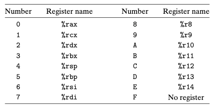

Chapter 04. 프로세서 구조
- 4.1 Y86-64 인스트럭션 집합 구조
- 3장까지는 컴퓨터 시스템을 기계어 프로그램의 수준까지만 내려가서 살펴보았다.
- 프로세서가 일련의 명령어들을 샐힝하고, 각 명령으들은 두 개의 수를 더한다든지의 기본적인 기능을 수행하는 것을 알게 되었다.
- 한 개의 인스트럭션은 연속된 바이트들로 이진수의 형태로 인코딩된다.
- 인스트럭션들은 특정 프로세서에 의해 지원되며, 바이트수준의 인코딩을 인스트럭션 집합 구조instruction set architecture(ISA)라고 한다.
- ISA는 어떤 인스트럭션들이 허용되고, 어떻게 그들이 인코딩되었는지 알고 있는 컴파일러 작성자와 이들 인스트럭션을 실행해야 하는 머신을 만들어야 하는 프로세서 설계자들에게 개념적 추상화 계층을 제공하고 있다.
- 4장에서는 프로세서 하드웨어의 설계를 간단히 살펴본다.
- 하드웨어 시스템이 어떻게 특정 ISA의 인스트럭션들을 실행할 수 있는지를 학습한다.
- 이러한 관점은 어떻게 컴퓨터들이 동작하는지와 컴퓨터 제작자들이 직면하고 있는 기술적인 도전들을 더 잘 이해할 수 있게 해준다.
- 왜 프로세서 설계를 공부해야 하는 것인가?
- 지적으로 흥미롭고 중요하기 때문이다.
- 프로세서의 동작방법을 이해하면 전체 컴퓨터 시스템의 동작 방법을 이해하는 데 도움을 준다.
- 비록 적은 수의 사람들만이 프로세서를 설꼐하지만 많은 사람들이 프로세서를 포함하는 하드웨어 시스템을 설계한다.
- 4장에서는 인스트럭션 집합을 정의한다 : “Y86-64” 인스트럭션 집합
- x86-64에 비해서 적은 자료형, 인스트럭션, 주소지정 모드를 갖는다.
- 디지털 하드웨어 설계에 관한 약간의 배경지식을 제공한다.
- 기초 설계 블록과 이들이 어떻게 서로 연결되고 동작하는지 설명한다.
- 불 대수와 비트수준 연산에 관한 논의에 기초한다.
- 간단한 언어인 HCL : 하드웨어 시스템의 제어 부분을 설명하는 데 사용된다.
- 순차 설계를 기초로 해서 파이프라인형pipelined 프로세서를 만드는 일련의 변환을 적용한다.
- 각 인스트럭션의 실행단계를 5단계로 나누어서 각각 별도의 부분 또는 하드웨어 단계에서 처리되도록 한다.
4.1 Y86-64 인스트럭션 집합
인스트럭션 집합을 설계하기 위해서는 여러 가지 상태요소들, 인스트럭션 집합과 이들의 인코딩, 프로그래밍 관습들, 예외적 사건들의 처리 등에 대한 정의를 해야 한다.
4.1.1 프로그래머-가시성 상태programmer-visible state
- Y86-64의 각 인스트럭션은 프로세서 상태의 일부를 읽거나 변경할 수 있다.
- 이것을 프로그래머-가시성상태programmer-visible state라고 한다.
- 프로세서를 구현할 때는 기계수준 프로그램이 프로그래머 가시 상태에 접근하는 것을 확실히 할 수만 있다면 이 상태를 ISA가 의미하는 방식대로 정확히 표시하거나 구성할 필요가 없다는 것을 알게 될 것이다.
-
아래의 그림은 Y86-64 프로그래머-가시성 상태이다. 프로그램 레지스터, 조건코드, 프로그램 카운터(PC), 메모리를 접근하고 수정할 수 있다. 상태코드는 이 프로그램이 정상적으로 실행되고 있는지, 어떤 특수한 사건이 발생했는지를 나타낸다.
- 레지스터 %rsp는 push, pop, call, return 인스트럭션을 사용할 때 스택 포인터로 이용된다.
- 메모리는 개념적으로 커다란 바이트의 배열이다.
- Y86-64 프로그램들은 가상주소를 사용해서 메모리 위치를 참조한다.
- 운영체제와 하드웨어가 함께 이 가상주소를 실제주소, 즉 물리 주소로 번역한다.
- 프로그램 상태의 마지막 부분은 상태코드 Stat이다.
- 프로그램 실행의 전체적인 상태를 나타낸다.
4.1.2 Y86-64 인스트럭션
- 아래의 그림은 Y86-64 인스트럭션 집합이다.
- 인스트럭션 인코딩은 1에서 10바이트가 쇼요된다.
- 한개의 인스트럭션은 1바이트의 인스트럭션 식별자와 1바이트 레지스터 식별자, 8바이트 상수 워드로 구성될 수 있다.
- 필드 fn은 특정 연수 연산(OPq), 데이터 이동 조건(cmovXX), 분기조건(jxx)을 나타낸다.
- 모든 숫자 값은 16진수로 나타낸다.
- movq 인스트럭션은 네 개의 인스트럭션으로 나누어진다.
- irmovq, rrmovq, mrmovq, rmmovq
- 소스와 목적지를 명시적으로 나타낸다.
- 소스는 상수 immediatde(i), 레지스터(r), 메모리(m) 중의 하나가 될 수 있다.
- OPq로 나타낸 것처럼 네 개의 정수 연산이 있다.
- addq, subq, andq, xorq
- 이 인스트럭션 집합은 ZF, SF, OF(zero, sign, overflow) 조건코드를 결정한다.
- 일곱개의 jump 인스트럭션이 있다.
- jmp, jle, jl, je, jne, jge, jg
- 여섯 개의 move 인스트럭션이 있다.
- cmovle, cmovl, cmove, cmovne, cmovge, cmovg
- 목적지 레지스터는 조건코드가 요구된 조건을 만족할 때에만 갱신된다.
- call 인스트럭션은 리턴주솔들 스택에 넣고 목적지 주소로 이동한다.
- ret 인스트럭션은 call에서 리턴해준다.
- pushq와 popq 인스트럭션은 push와 pop을 구현한다.
- halt 인스트럭션은 인스트럭션의 실행을 정지시킨다.
4.1.3 인스트럭션 인코딩
-
아래의 그림은 인스트럭션들의 바이트 수준 인코딩을 보여준다.
- 각 인스트럭션은 인스트럭션의 타입을 의미하는 첫 번째 바이트를 사용한다.
-
아래의 그림은 인스트럭션들에 대한 특정 인코딩을 보여준다.
- rrmovq가 조건부 이동과 동일한 인스트럭션 코드를 갖는 점에 유의하라.
- jmp 인스트럭션이 무조건적 점프인 것과 마찬가지로 이것은 “무조건적 move”로 생각 할 수 있다.
- rrmovq가 조건부 이동과 동일한 인스트럭션 코드를 갖는 점에 유의하라.
-
아래의 그림은 Y86-64 프로그램 레지스터 식별자이다.

- 15개의 프로그램 레지스터들은 0에서 0xE 사이의 식별자를 갖는다.
- 프로그램 레지스터들은 CPU 내의 레지스터 파일에 저장된다.
- 레지스터 파일은 레지스터 ID가 주소로 이용되는 작은 크기의 RAM이다.
- 식별자 0xF는 레지스터에 접근하지 말아야 한다는 것을 나타낼 필요가 있을 때, 인스트럭션 인코딩에서, 우리의 하드웨어 설계 내에서 이용된다.
- 일부 인스트럭션들은 1바이트 길이를 사용하지만, 오퍼랜드를 필요로 하는 경우에는 좀 더 긴 인코딩을 사용한다.
- 하나 또는 두 개의 레지스터를 명시하기 위해 추가적인 레지스터 식별자 바이트를 사용할 수 있다.
- 어떤 인스트럭션들은 추가로 8바이트 상수 워드를 필요로 한다.
- 이 워드는 irmovq의 즉시 데이터가 될 수 있다.
- rmmovq와 mrmovq 주소 지시자를 위한 변위값으로 그리고 분기와 call 명령의 목적지로 사용될 수 있다.
- 모든 인스트럭션 집합에 있어서 한 가지 중요한 특성은 바이트 인코딩이 유일한 해석을 가져야 한다는 것이다.
- 모든 인스트럭션이 첫 번째 바이트에 코드와 기능의 유일한 조합을 갖기 때문이며, 바이트만 주어지면 추가적인 바이트들의 의미와 길이를 결정할 수 있다.
4.1.4 Y86-64 예외상황
- 프로그래머가 볼 수 있는 상태는 현재 실행하고 있는 프로그램의 전체적인 상태를 나타내는 Stat 상태코드를 포함한다.
-
아래의 그림은 Y86-64 상태코드이다.. 우리의 설계에서 프로세서는 AOK 이외의 모든 코드에서 정지한다.
- 코드1, AOK라고 이름 붙인 이 프로그램이 정상적으로 실행되고 있음을 나타낸다.
- 코드2, HLT 인스트럭션을 실행한 것을 나타낸다.
- 코드3, ADR 인스트럭션을 선입하거나 데이터를 읽거나 쓰는 경우에 잘못된 메모리주소 읽어오거나 쓰려고 한 것을 나타낸다.
- 코드4, 잘못된 인스트럭션 코드를 만났다는 것을 의미한다.
4.1.5 Y86-64 프로그램
-
아래의 그림은 Y86-64 어셈블리 코드로 작성한 에제 프로그램이다. Sum함수는 4개의 원소를 갖는 배열의 합을 계산하기 이해 호출된다.
- 이 프로그램은 데이터와 인스트럭션 모두를 가지고 있다.
- 지시자들은 코드나 데이터를 어느 위치에 저장하고 이것을 어떻게 정렬할지를 나타낸다.
- 스택 위치, 데이터 초기화, 프로그램 초기화, 프로그램 종료 같은 이슈들을 보여주고 있다.
- ”.”로 시작하는 단어들은 어셈블러 지시자directive들로 어셈블러가 만드는 코드의 주소를 조정하고 일부 데이터 워드를 추가하도록 어셈블러에게 지시한다.
-
아래의 그림은 위의 그림을 YAS라고 하는 어셈블러를 사용해서 어셈블한 결과를 보여준다. == 어셈블러, 목적코드
- 목적코드는 인스트럭션이나 데이터를 포함하는 어셈블리 파일의 각 줄에서 주소를 가지며, 다음에 1에서 10바이트의 값들이 따라온다.